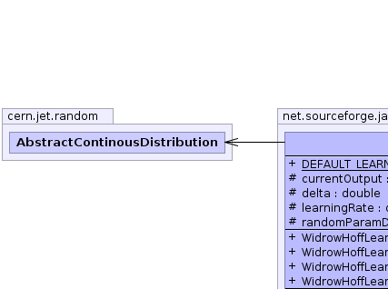
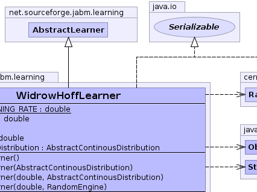
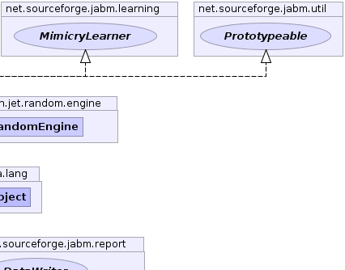
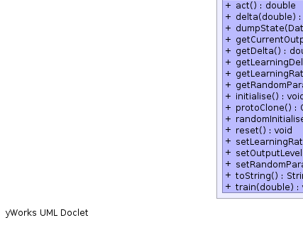
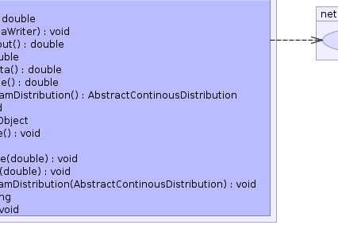
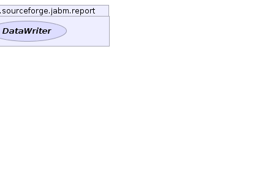

net.sourceforge.jabm.learning.AbstractLearner
net.sourceforge.jabm.learning.WidrowHoffLearner
net.sourceforge.jabm.learning.AbstractLearner
net.sourceforge.jabm.learning.WidrowHoffLearner
|
|||||||||
| PREV CLASS NEXT CLASS | FRAMES NO FRAMES | ||||||||
| SUMMARY: NESTED | FIELD | CONSTR | METHOD | DETAIL: FIELD | CONSTR | METHOD | ||||||||
java.lang.Object
public class WidrowHoffLearner
An implementation of the Widrow-Hoff learning algorithm for 1-dimensional training sets.
|  |  |  |
|  |  |  |
| Field Summary | |
|---|---|
protected double |
currentOutput
The current output level. |
static double |
DEFAULT_LEARNING_RATE
|
protected double |
delta
The current amount of adjustment to the output. |
protected double |
learningRate
The learning rate. |
protected cern.jet.random.AbstractContinousDistribution |
randomParamDistribution
|
| Fields inherited from class net.sourceforge.jabm.learning.AbstractLearner |
|---|
monitor |
| Constructor Summary | |
|---|---|
WidrowHoffLearner()
|
|
WidrowHoffLearner(cern.jet.random.AbstractContinousDistribution randomParamDistribution)
|
|
WidrowHoffLearner(double learningRate,
cern.jet.random.AbstractContinousDistribution randomParamDistribution)
|
|
WidrowHoffLearner(double learningRate,
cern.jet.random.engine.RandomEngine prng)
|
|
| Method Summary | |
|---|---|
double |
act()
Generate an output from the learning algorithm. |
double |
delta(double target)
|
void |
dumpState(DataWriter out)
Write out our state data to the specified data writer. |
double |
getCurrentOutput()
|
double |
getDelta()
|
double |
getLearningDelta()
Return a value indicative of the amount of learning that occured during the last iteration. |
double |
getLearningRate()
|
cern.jet.random.AbstractContinousDistribution |
getRandomParamDistribution()
|
void |
initialise()
|
java.lang.Object |
protoClone()
|
void |
randomInitialise()
Initialise with random values for free parameters |
void |
reset()
|
void |
setLearningRate(double learningRate)
|
void |
setOutputLevel(double currentOutput)
Initialise the learning algorithm to output the supplied value. |
void |
setRandomParamDistribution(cern.jet.random.AbstractContinousDistribution randomParamDistribution)
|
java.lang.String |
toString()
|
void |
train(double target)
Provide a training signal to the learning algorithm. |
| Methods inherited from class net.sourceforge.jabm.learning.AbstractLearner |
|---|
monitor |
| Methods inherited from class java.lang.Object |
|---|
clone, equals, finalize, getClass, hashCode, notify, notifyAll, wait, wait, wait |
| Methods inherited from interface net.sourceforge.jabm.learning.Learner |
|---|
monitor |
| Field Detail |
|---|
protected double learningRate
protected double currentOutput
protected double delta
protected cern.jet.random.AbstractContinousDistribution randomParamDistribution
public static final double DEFAULT_LEARNING_RATE
| Constructor Detail |
|---|
public WidrowHoffLearner(double learningRate,
cern.jet.random.AbstractContinousDistribution randomParamDistribution)
public WidrowHoffLearner(cern.jet.random.AbstractContinousDistribution randomParamDistribution)
public WidrowHoffLearner()
public WidrowHoffLearner(double learningRate,
cern.jet.random.engine.RandomEngine prng)
| Method Detail |
|---|
public void initialise()
public java.lang.Object protoClone()
protoClone in interface Prototypeablepublic double act()
ContinuousLearner
act in interface ContinuousLearnerpublic void train(double target)
MimicryLearner
train in interface MimicryLearnerpublic double delta(double target)
public void setOutputLevel(double currentOutput)
MimicryLearner
setOutputLevel in interface MimicryLearnerpublic void dumpState(DataWriter out)
Learner
dumpState in interface LearnerdumpState in class AbstractLearnerpublic double getLearningDelta()
Learner
getLearningDelta in interface LearnergetLearningDelta in class AbstractLearnerpublic void reset()
public void setLearningRate(double learningRate)
public double getLearningRate()
public void randomInitialise()
MimicryLearner
randomInitialise in interface MimicryLearnerpublic double getCurrentOutput()
public double getDelta()
public cern.jet.random.AbstractContinousDistribution getRandomParamDistribution()
public void setRandomParamDistribution(cern.jet.random.AbstractContinousDistribution randomParamDistribution)
public java.lang.String toString()
toString in class java.lang.Object
|
|||||||||
| PREV CLASS NEXT CLASS | FRAMES NO FRAMES | ||||||||
| SUMMARY: NESTED | FIELD | CONSTR | METHOD | DETAIL: FIELD | CONSTR | METHOD | ||||||||